Chronoscore
Chronoscore keeps score for tabletop, card and board games on one shared screen. Put the device in the middle of the table or pass it around. There is no account, no sync and no network: everything stays on the device.
Install
| Platform | File | How |
|---|---|---|
| Android 7.0+ | Chronoscore-1.3.0.apk | Allow installs from your browser or file manager, then open the file. Updating over 1.0 keeps all your matches. |
| Windows 10/11 (x64) | Chronoscore-1.3.0.exe | Run the installer. It includes its own Java runtime, so you don't need Java installed. Chronoscore appears in the Start menu. |
| Windows, portable | Chronoscore-windows-x64-1.3.0.jar | Needs Java 17+. Run java -jar Chronoscore-windows-x64-1.3.0.jar. |
| Linux | build from source | ./gradlew :composeApp:packageDeb or packageRpm on the target machine. |
Your data is upgraded automatically the first time 1.1 starts. Nothing is lost, and 1.0 matches open with every new option off.
Quick start
- Open Chronoscore. The start screen offers Continue (your last match), New game or Saved matches. On a first launch, Continue gives you a 4-player table at 20.
- Tap New game (or later, Menu in the center pill, under New game). Tap a preset such as Commander or Hearts, or set the players and starting score yourself.
- Optionally tap Options to turn on the turn tracker, timers or a win rule, then Start new game.
- Tap a seat's left half to subtract and its right half to add. Hold to count faster.
- Made a mistake? Tap Undo in the center pill. Every match saves itself as you play.
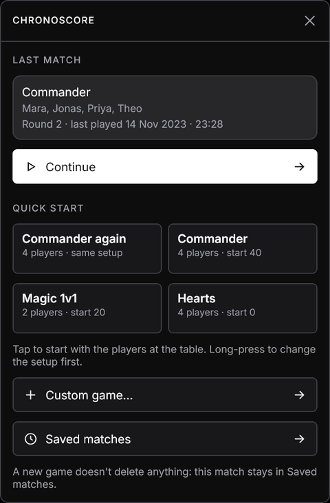
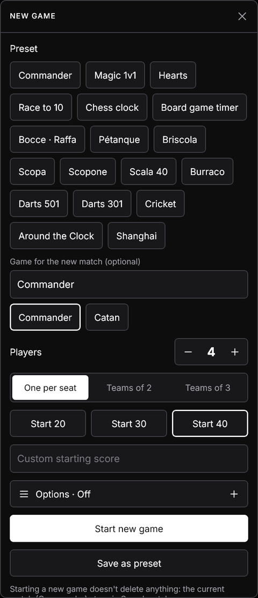
Seats and layouts
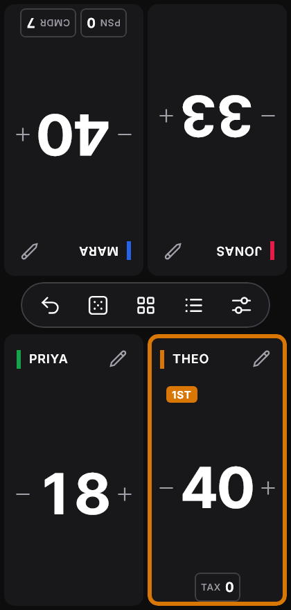
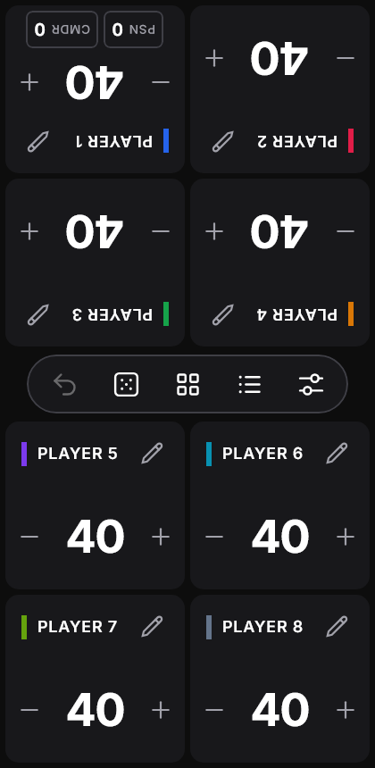
Each player has a seat: a card with their name, their score and any counters. The grid adapts to how many players there are (1 to 8) and to portrait or landscape.
- Seats in the top half are rotated 180° so they face the players sitting across from the device.
- To turn a seat by hand, tap its ⟲ rotate button. Each tap turns it 30°, so a seat can face a player at a corner or along the side of the table. Edit seat also has −30° / +30° and Flip 180°. A tilted seat shrinks to stay inside its space.
- Header buttons: # keypad, ⟲ rotate and ✎ edit. On narrow phone seats only ✎ is shown; the rest is inside the seat editor.
Counting
- Tap the left half for −1 or the right half for +1.
- Hold to repeat. After about a second it switches to steps of ±5.
- While you count, the running delta (for example −7) shows next to the name. When you pause, it folds into the match log as one entry, so one Undo reverts the whole press.
The center hub
The pill on the line between the two halves of the table holds the shared controls. When the turn tracker or a clock is on, the turn bar appears just above it, and a winner banner appears when a match is decided.
| Button | Action |
|---|---|
| ↶ Undo | Reverts the last change, or the last batch. Dimmed when the log is empty. |
| ⚄ Dice | Opens the table utilities. |
| ▦ Edit all seats | Changes a score or counter on many seats at once. |
| ☰ Log | Opens the match log, organized by round. |
| ⚌ Menu | Current game, match options, saved matches, appearance and new games. |
Keypad
Open it with # on a seat, or by tapping a counter's value.
- Set replaces the value. + Add and − Sub change it by the amount you type.
- ± makes a Set value negative.
- Only name / All seats chooses whether the change applies to this seat or every seat.
A keypad opened from a flipped seat is turned to face that player.
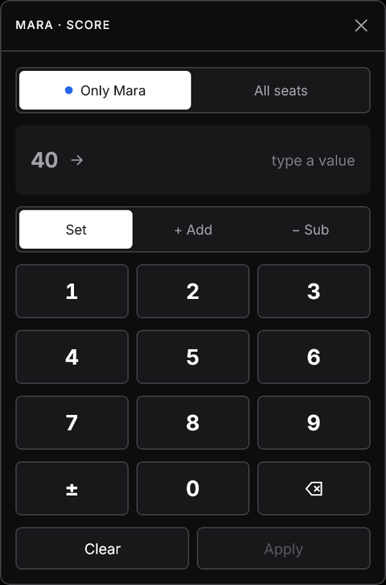
Counters
Each seat holds up to 4 counters: Poison, Commander, Energy, VP, Fouls, Tax, or one you name yourself.
- One seat: tap + COUNTER on the seat, or ✎ → Counters.
- Whole table: Menu → Counters on every seat. Turning a counter on adds it to every seat at 0. A half-filled switch means it's only on some seats. Seats that already hold 4 counters are skipped and named.
- Counters count like the score: tap − or +, hold to repeat, or tap the value for the keypad.
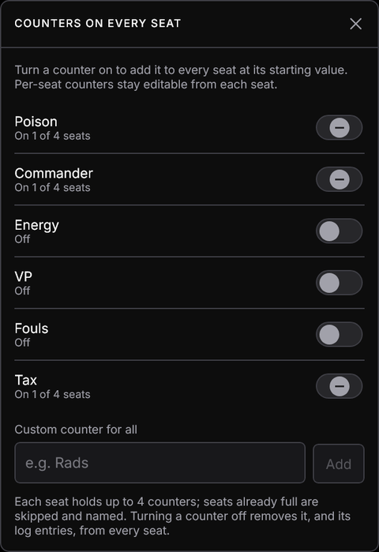
Edit all seats
- Pick the seats, or All.
- Pick what to change: Score or a counter by name.
- Choose Set to, + Add or − Sub and enter the amount.
Each seat previews old → new. Apply writes one log entry per seat, and a single Undo reverts all of them.
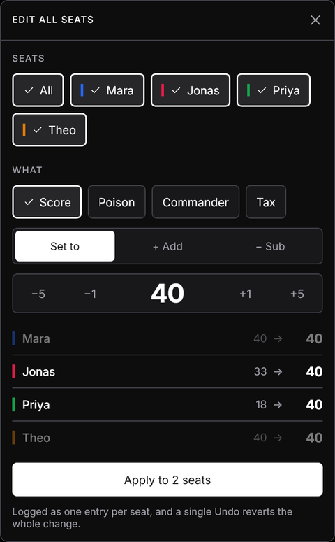
Editing a seat
Tap a seat's name or ✎. From here you can:
- Rename the seat, set its score, or turn it (30° steps, or flip 180°).
- Clock −1 min / +1 min (timer mode): correct a clock, give a handicap, or bring back a seat that ran out by mistake.
- Give turn makes it the active seat (turn tracker on).
- Mark as out or Back in: concede, or undo a concession.
- Monarch and Initiative (MTG extras on).
- Saved player: save this seat as a player, or pick an existing one. It takes that player's name and color, and the seat's results count toward their stats.
- Choose a color, manage counters, or remove the seat (tap twice to confirm).
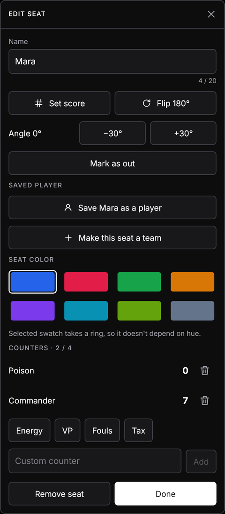
Turning options on
Match options belong to one match. Set them in either place:
- For the match on the table: Menu → Match options. Changes apply immediately, mid-game included.
- For a new match: Menu → New game → Options, or pick a preset that sets them for you.
The Match options button shows a short summary of what's on, for example Turns · Clock · Elimination.
| Option | What it does |
|---|---|
| Turn tracker | One active seat, with Previous / Next buttons. |
| Match clock | Total match time, with pause and resume. |
| Seat timers | Each seat's own time on its turns (needs the turn tracker). |
| Turn limit | A countdown per turn: 30 s, 1, 2 or 5 min (needs the turn tracker). |
| Winning | None, Target score, or Elimination. |
| Round sheet | A scorepad layout instead of seat cards. |
| MTG extras | Commander damage, Monarch, Initiative, Day/Night. |
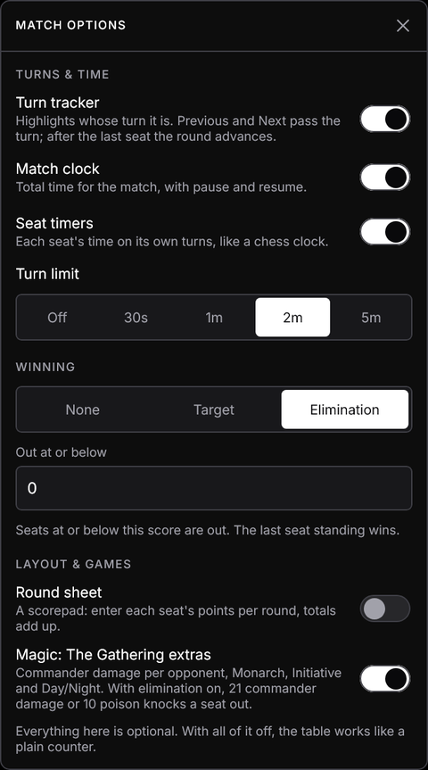
Turn tracker
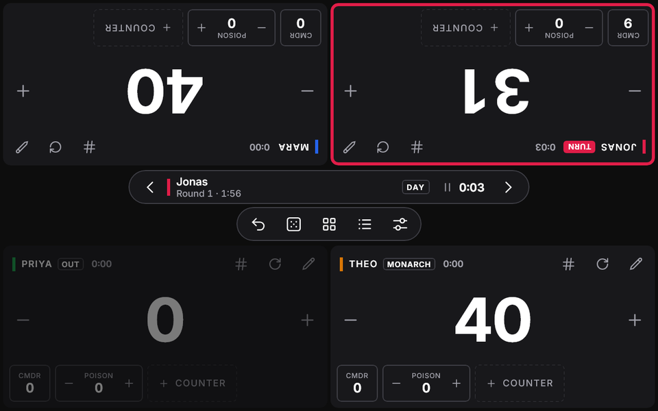
With the turn tracker on, one seat is active. It gets a colored ring and a TURN tag, and the turn bar appears above the center hub.
- Next › passes the turn to the next seat in seat order. After the last seat, the round advances automatically.
- ‹ Previous passes it back. Going back past the first seat returns to the previous round (never below round 1). Use it if someone tapped Next too early.
- Seats that are out are skipped. A seat that concedes on its own turn hands the turn to the next seat.
- To jump to any seat, open its editor and tap Give turn.
Score changes are logged under the round shown in the turn bar, so the match log groups them correctly.
Match clock and seat timers
Match clock
Total time for the match, shown in the turn bar next to the pause button.
Seat timers
Each seat shows its own total time on turns, like a chess clock. Only the active seat's time runs.
Turn limit
A countdown for each turn. Past the limit, the time turns rose and counts into negative overtime.
- ⏸ Pause / ▶ Resume in the turn bar stops and starts all timing.
- The clock pauses by itself when you leave the app on Android, or close the window on desktop, so time isn't counted while nobody is playing. Tap ▶ to resume.
- When the turn passes, the outgoing seat's turn time is added to its seat timer and the turn time starts again at zero.
- Seat time is kept with the match, and the stats show each player's total time on turns.
Timer mode
A chess clock for 1–8 seats, for any game where each player has a fixed amount of thinking time: chess, Go, or board games where turns drag on. Turn on Match options → Timer mode and every seat becomes a large clock tile that counts down its own time bank.
- Time per seat: 1, 3, 5, 10, 15, 30 or 60 minutes.
- Increment (Fischer): the seat gains 2, 5, 10 or 30 s after every turn it finishes in time.
- Delay: the first seconds of each turn are free, and only time past the delay comes off the bank.
- Seat is out when time runs out: the tile is dimmed with OUT OF TIME and skipped, and the last seat left wins. Or choose Overtime: the clock keeps going below zero in red, and nobody is knocked out.
The clock starts paused. Tap the active tile (TAP TO START) to start it. After that, tapping your own tile ends your turn, like pressing a chess clock. Other tiles ignore taps, so a stray touch can't pass the turn. The tile turns red in the last 10 seconds, and ⏸ in the turn bar pauses everyone.
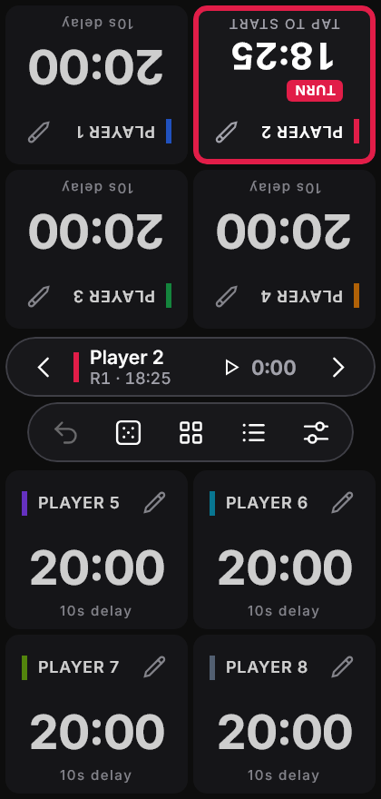
Winning and elimination
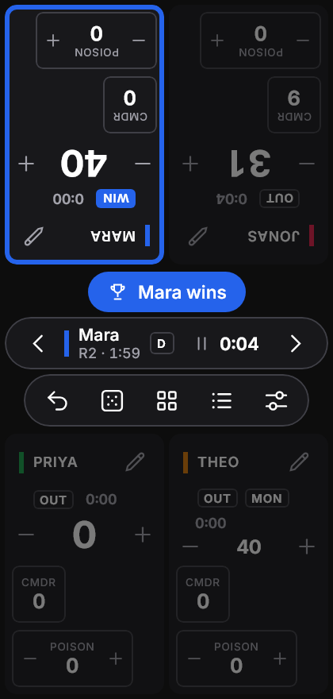
Choose a rule under Match options → Winning:
| Rule | How it works | Good for |
|---|---|---|
| None | No automatic result. A seat can still Mark as out; when only one seat is left, it wins. | Most games |
| Target | The match ends when a seat reaches the target score (counting up or down, depending on where you started). Then Highest wins or Lowest wins decides. | Race to 10 VP; Hearts (to 100, lowest wins) |
| Out ≤ (elimination) | A seat at or below the threshold (0 by default) is OUT. The last seat standing wins. | Life-total games, Magic |
| Out ≥ | For penalty points: a seat at or above the threshold (101 by default) is OUT. The last seat standing wins. | Scala 40 |
- Seats that are out are dimmed but stay editable, so you can still fix mistakes.
- The winner gets a ring and a WINNER tag, and a banner appears on the center line. A tie names everyone tied; if nobody is left standing, it's a draw.
- Results come from the scores, so Undo brings an eliminated seat back, and correcting a score can reopen a finished match.
Round sheet
For games scored at the end of each round (Hearts, Rummy, Yahtzee-style games), turn on Round sheet. Seat cards are replaced by a scorepad:
- One column per seat and one row per round. TOTAL at the bottom is each seat's score.
- Tap a cell to enter that seat's points for the round. Set replaces the round's points and + Add adds to them. Earlier rounds can be corrected the same way.
- Next round → adds a row. With the turn tracker on, Next after the last seat does the same.
- Tap a name in the header to edit that seat.
Every entry is an ordinary log entry in its round, so Undo, the match log, win rules and CSV export all work.
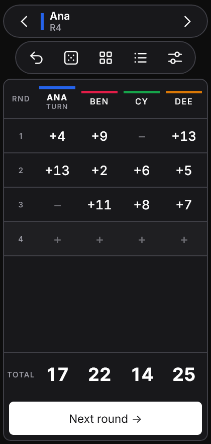
Hand calculators
For card games and bocce, pick a Hand calculator under Match options → Layout & games (with the Round sheet on), or start from one of their presets. Tapping a round then opens a calculator for the whole hand instead of the keypad:
- Enter what happened in the hand; the points for each seat show at the bottom before you tap Apply.
- Applying the current round moves the sheet on to the next one. One Undo reverts the whole hand.
- Type points goes back to the plain keypad for that cell.
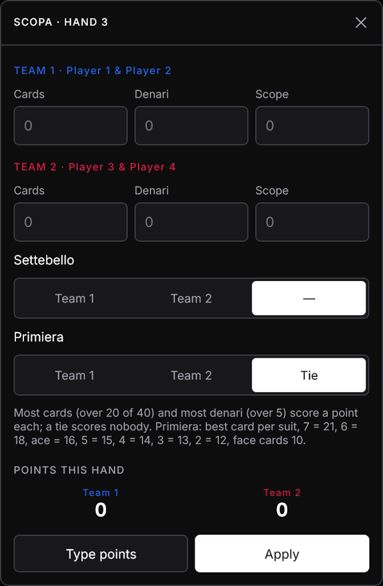
| Calculator | You enter | Points |
|---|---|---|
| Scopa / Scopone | Cards, denari and scope per side; who took the settebello and the primiera | 1 each for most cards, most denari (a tie scores nobody), settebello and primiera; +1 per scopa |
| Burraco | Clean and dirty burrachi, cards on the table and in hand, pozzetto taken, who closed | +200 / +100 per burraco, +100 for closing, −100 without the pozzetto, plus the table, minus the hand |
| Briscola | One side's card points (the other side has the rest of 120) | 61 wins the hand (1 point); 60–60 is a draw |
| Bocce | The side closest to the jack, and how many of its bocce beat the other side's best | Only that side scores |
| Scala 40 | Who closed; for the others, whether they opened and their cards in hand | 0 for closing, 100 for not opening, otherwise the cards in hand |
Darts
Choose a game under Match options → Darts, or a darts preset. The table becomes a darts board: seat scores on top, the visit in progress below them, and a keypad at the bottom.
- Pick Single / Double / Treble, then the number. The ring goes back to Single after each dart. 25 is the single bull; with Double it is the bull's eye (50).
- After three darts, a bust or a win, the turn passes by itself. Next in the turn bar ends a visit early; the darts not thrown count as misses.
- Undo takes back one dart, and a bust or a win with it.
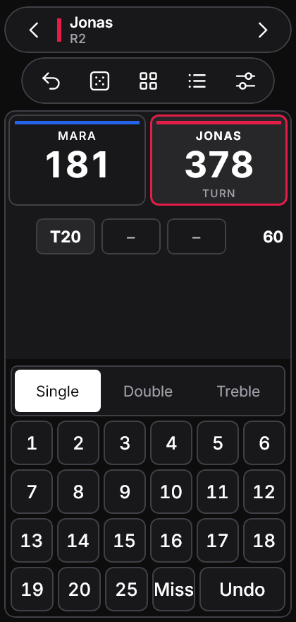
| Game | Rules |
|---|---|
| X01 (301, 501, 701) | Count down to exactly 0. With double out the last dart must be a double (or the bull's eye); going below 0, or to 1, is a bust and the visit doesn't count. Double in starts scoring with a double. The active seat shows a checkout, such as T20 T20 Bull for 170. |
| Cricket | Three marks close 15–20 or the bull (a treble closes in one), shown as / X Ⓧ. Extra marks score the number while an opponent still has it open. Close everything without trailing on points to win. |
| Around the Clock | Hit 1 to 20 in order, then the bull. Any ring counts as one hit. The first to hit the bull wins. |
| Shanghai | Round n aims at n; doubles and trebles multiply. Single, double and treble of n in one visit wins outright; otherwise the highest score after 7 (or 20) rounds wins. |
Teams
A seat can be a team whose members share its score, as in Scopone, Burraco in pairs or bocce teams.
- Choose Teams of 2 (or 3) under Menu → New game, or tap Edit seat → Make this seat a team.
- Add members by name or from your saved players; remove them in the same place. Removing every member makes it a single seat again.
- Member names show under the team name, on the table and on the round sheet.
- Players and stats count a team's result for each member, and the CSV export lists the members.
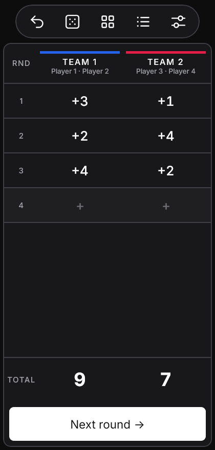
Magic: The Gathering extras
Turn on Magic: The Gathering extras (the Commander and Magic 1v1 presets do this for you). It adds:
Commander damage
- Each seat shows a CMDR chip with the most damage it has taken from a single commander.
- Tap it to open the tracker, which has one row per opponent in their seat color.
- Each change also takes the same amount off that seat's life, and the two are one Undo step.
Monarch and Initiative
Assign them from a seat's editor. The holder shows a MONARCH or INITIATIVE tag. Only one seat holds each at a time.
Day / Night
Set it in Table utilities. The current state shows in the turn bar.
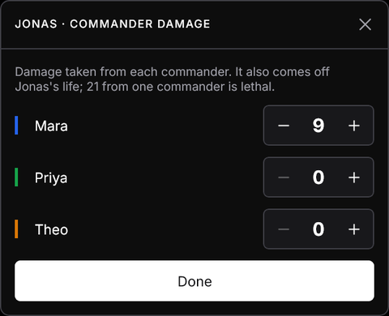
Presets
A preset is a ready-made match setup: number of players, starting score, counters on every seat, game name, and match options. Pick one under Menu → New game. It fills in the form, which you can still adjust before starting.
| Built-in preset | Setup |
|---|---|
| Commander | 4 players at 40, Poison counter, turn tracker, Elimination, MTG extras |
| Magic 1v1 | 2 players at 20, Poison counter, Elimination, MTG extras |
| Hearts | 4 players at 0, Round sheet, Target 100 with lowest wins |
| Race to 10 | 4 players at 0, turn tracker, Target 10 |
| Chess clock | 2 players, timer mode: 10 min each, +5 s increment, out on time |
| Board game timer | 4 players, timer mode: 20 min each, 10 s delay, overtime; match clock |
| Bocce · Raffa / Pétanque | 2 sides, Round sheet with the bocce calculator, Target 12 / 13 |
| Briscola | 2 sides, Round sheet with the Briscola calculator, Target 2 hands |
| Scopa / Scopone | 2 players / 2 teams of 2, Round sheet with the Scopa calculator, Target 11 |
| Scala 40 | 4 players, Round sheet with the Scala 40 calculator, out at 101 |
| Burraco | 2 teams of 2, Round sheet with the Burraco calculator, Target 2005 |
| Darts 501 / 301, Cricket, Around the Clock, Shanghai | 2 players, darts board |
- Save as preset (under the New game form) stores your current setup under its game name.
- Pick one of your saved presets to see Delete this preset. Built-in presets can't be deleted.
- Saved presets are included in backups.
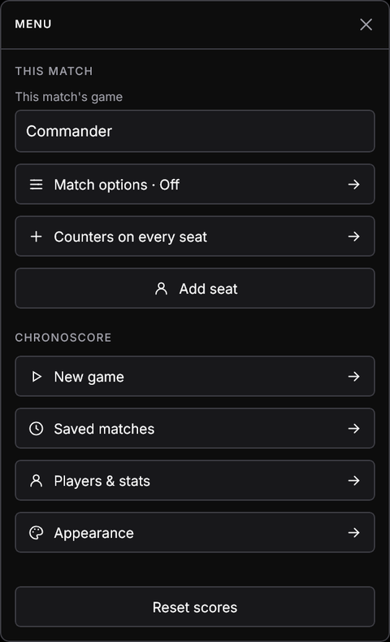
Table utilities
- Dice: d4, d6, d8, d10, d12 and d20, or a custom dX from 2 to 1000. Dice per roll rolls up to 6 and shows the total.
- Flip coin: heads or tails.
- First player: picks a random seat, which gets a ring and a FIRST tag for a few seconds.
- Turn order: a random order of all players.
- Day / Night appears here when MTG extras are on.
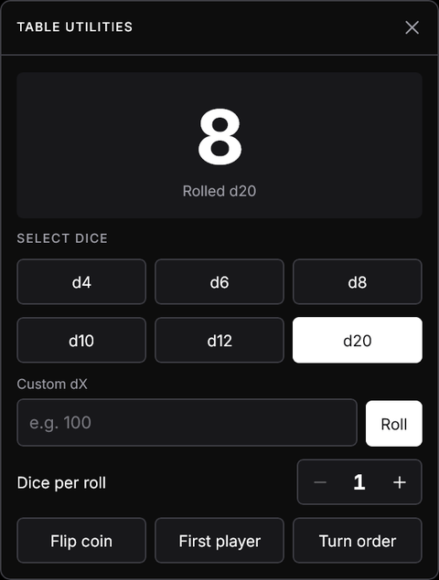
Match log and undo
Every change is listed under its round: the player, what changed (Score, a counter, or Cmdr · opponent), the change (green up, red down) and the resulting value.
- Undo reverts the most recent entry, or a whole batch (Edit all seats, commander damage).
- Next round → starts a new round by hand, which is useful without the turn tracker.
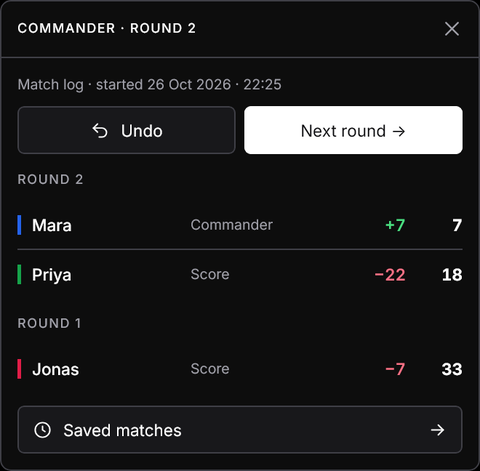
Saved matches
Every match saves itself and is kept until you delete it, with its own players, counters, options, timers and log. Open Menu → Saved matches (or the link in the log):
- Matches are grouped by game, most recently played first.
- Continue brings a match back exactly as you left it.
- 🗑 deletes a match. Tap a second time to confirm.
- This match belongs to (here, or This match's game in the menu) files the current match under a game. The name is saved right away and shows on the hub and in the match log.
- Starting a new game never loses the current one; it stays here. Start new game asks for a second tap.
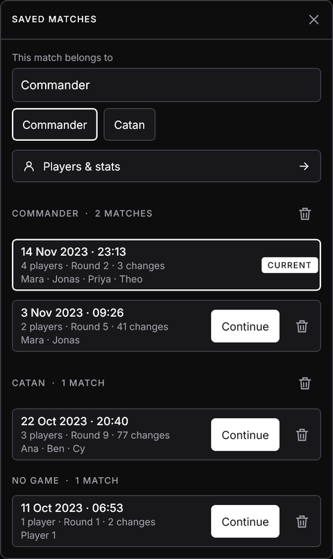
Players and stats
Open Menu → Players & stats. For every player across your saved matches you'll see matches played, wins, win rate, average and best score, and time on turns.
- Filter by game with the chips at the top.
- Wins count only matches with a result: a win rule decided it, or everyone else was marked out.
- Seats linked to a saved player are counted together even if the seat name changed. Other seats are grouped by name and marked by name, so matches from 1.0 count too.
- Remove a saved player from the list at the bottom. Their past matches stay and are counted by name.
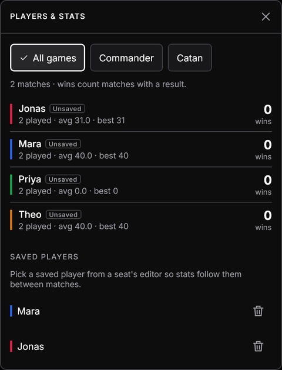
Backup, import and CSV
Chronoscore never uploads anything. Cloud backup is turned off on Android, so uninstalling deletes your matches. A backup is a file you keep yourself. The buttons are in Saved matches → Backup:
Export all
One .json file with every match, preset and saved player. You choose where it goes: Downloads, a USB stick, or another app.
Import
Pick a backup file. Matches, presets and players are added; ones already here with the same id are replaced. The match on the table is never overwritten.
This match as CSV
The current match for a spreadsheet: every logged change (round, time, player, counter, change, result) and final standings.
Moving to a new phone or computer
- On the old device: Saved matches → Export all, and save the file somewhere you can reach.
- Copy the file to the new device and install Chronoscore there.
- On the new device: Saved matches → Import and pick the file.
Backups work across platforms: a backup made on Android imports on Windows or Linux, and back again.
Appearance
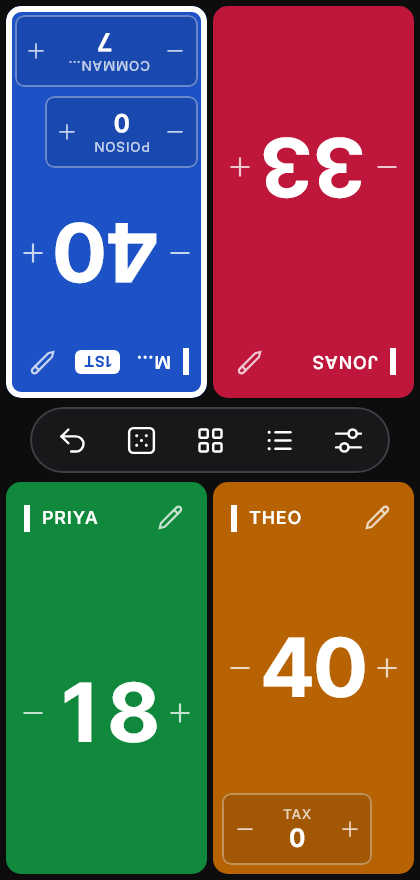
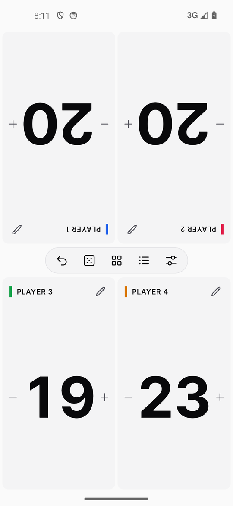
- Seat style: Neutral (dark cards with a color bar) or Colored (each card filled with the seat's color).
- Theme: System, Dark or Light.
Both are in Menu → Appearance and apply to every match.
Desktop
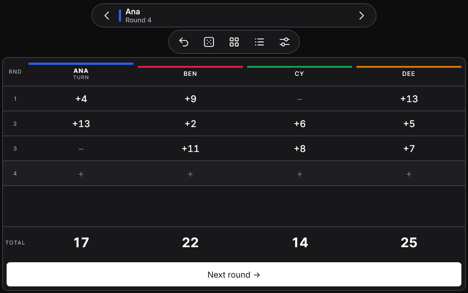
- Everything works the same as on Android. Click the halves to count, and click and hold to repeat.
- On wide windows, seat headers show the keypad and rotate buttons and spell tags out in full (MONARCH instead of MON).
- Closing the window saves the match and pauses its clock.
- Export and import use the normal Windows or Linux file dialog.
Your data
Data is stored only on your device, in a local SQLite database:
| Platform | Where it's stored |
|---|---|
| Android | Private app storage, excluded from cloud backup and device transfer. The app has no internet permission. |
| Windows | %APPDATA%\Chronoscore\chronoscore.db |
| Linux | ~/.local/share/chronoscore/chronoscore.db (or $XDG_DATA_HOME/chronoscore/) |
Uninstalling the Android app deletes its data, so export a backup first. On desktop, delete the file to start fresh, or start the app with -Dchronoscore.db=<path> to use another location.
Questions
The clock shows PAUSED or isn't moving.
It pauses itself when you leave the app or close the window. Tap ▶ in the turn bar.
A seat is dimmed and marked OUT, but it shouldn't be.
Check the win rule threshold in Match options, or tap Undo. If the seat was marked out by hand, use Edit seat → Back in.
I can't find the turn bar.
It appears only when the turn tracker, the match clock, or Day/Night (MTG extras) is on. Turn one on in Menu → Match options.
Stats show "0 wins" for everyone.
Wins count only matches with a result. Set a win rule (Target or Elimination), or mark the other seats out at the end of a match.
Does import duplicate my matches?
No. Matches are matched by id, so importing the same backup twice replaces rather than duplicates.
Can I turn all of this off?
Yes. Every 1.1 feature is a per-match option; with all of them off, the table is the classic counter.